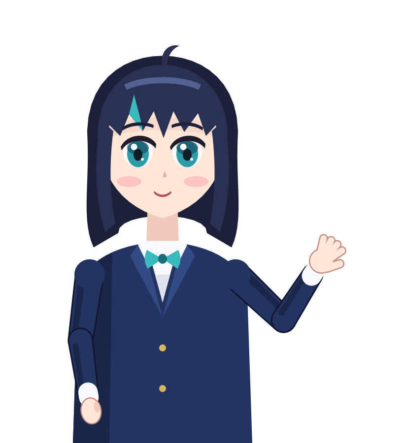
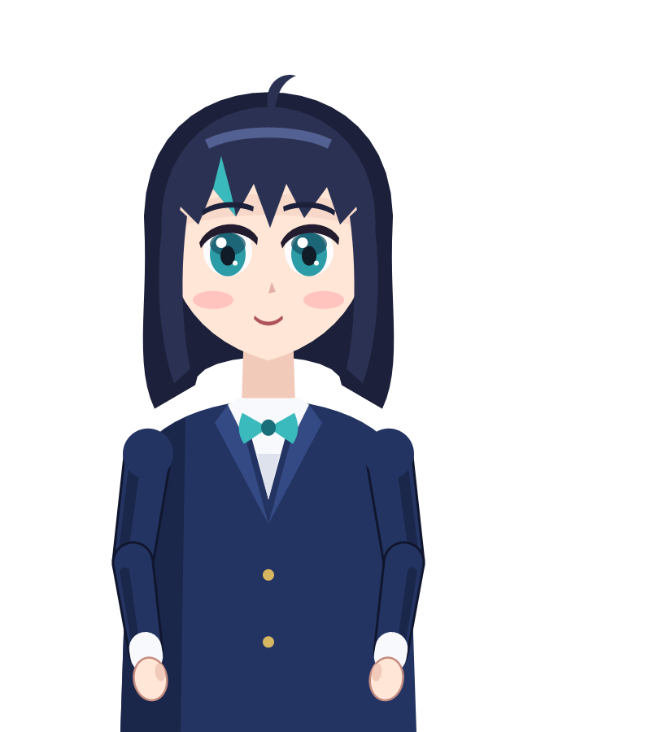

说一个主题，拿到能直接出片的讲稿、分镜和提示词包
topic-to-video 是给 Codex、Claude Code 等 Agent 用的轻量 skill。它把主题、资料或现成讲稿整理成中文知识解说视频方案，请你确认后，再交出逐镜提示词包，交给即梦、可灵、Vidu、海螺、Veo 等模型生成。

第二趟，浏览器直接拿本地副本来用。
示意 · L1 开发中三步出片
只在真正需要你决定的地方停下来。
1说主题
只缺主题时一次问齐；时长、受众、比例给默认值：120 秒、零基础观众、16:9。资料里的指令性文字只当内容，不会照做。
2确认讲稿与分镜
产出 project.json、讲稿和分镜，并自检：每句不超过 30 字，估时在目标 ±10% 以内，每句恰好属于一个镜头，画面关键词出自口播。你确认后才继续。
3拿提示词包出片
逐镜给出口播、节拍、首帧图和运动提示词：先出首帧图，再图生视频；支持首尾帧的平台用下一镜的首帧作尾帧，镜头自然衔接。
改一段讲稿或一个镜头？它只重做改到的部分，并说明哪些确认因此失效。
交付档位
L0 文本包 可用
project.json：唯一的数据源讲稿.md：配音稿分镜.md：每镜的版式、主持人、图解和 cue提示词包.md：逐镜的外部模型提示词
不需要 FFmpeg，也不调用付费服务。
L1 本地成片 开发中
- 1080p60 成片，主持人"晴"出镜讲解
- 按句字幕，关键词与图解同步着色
- 封面、B 站章节时间戳
- QA 报告：规格、响度、音画同步、跳变与卡顿
需要 Node、FFmpeg 和一个 npm 包。
主持人"晴"
原创动漫主持人：藏青短发配一缕青色挑染，头顶一根呆毛，白衬衫、青色领结、墨蓝短外套。
现有立绘：4 种表情（讲解、专注、开心、好奇），每种都有闭口、半开、张开三种口型和眨眼；4 种手势（默认、指向右侧、挥手、强调）。
v2 设计中 约 20 个矢量部件的骨架：渐变虹膜、三层头发、两色赛璐璐与边缘光；表情和手势平滑补间，口型连续开合，呼吸、眨眼、点头和视线自动跟随。
也可以换成你自己的角色：提供同名的素材和 profile.json。

出片质量 设计中
L1 渲染器按这份设计实现：出片质量设计。
60fps
默认 1080p60，可选 30fps。动画按连续时间计算，与帧率无关。
同元素补间
前后镜头里同名的节点、数字和主持人平滑移动到新位置；没有共同元素时做 0.3 秒缓动叠化。
关键词对齐
画面变化卡在句中的关键词上，优先用 TTS 的逐词时间；元素提前 0.15 秒入场，说到时正好落定。
表演贴合
问句歪头挑眉，重读处点头，图解出现时视线跟过去；表情和手势按句意切换。
画面不空泛
内置约 24 个图标，模板按元素数自动排布；画面关键词和口播对不上时自检会提醒。
QA 看得见
检查同步误差、跳变、卡顿和 BT.709 色彩；附联系表、转场条和口型抽检片段。
示例：为什么缓存能让网页变快？
一个 120 秒、14 个镜头的完整 L0 示例，节选 3 个镜头。全文见 examples/cache-speed。
| 镜头 | 口播 | 画面 | 主持人 |
|---|---|---|---|
| sh01 | 你昨天见过的这张图标，今天再打开，还要从头下载吗？ | 标题卡：同一张图，两次打开 / 还要从头下载吗？ | 好奇 |
| sh11 | 先看它有没有可用的验证信息。有了验证信息，浏览器可以先询问服务器。资源没变时，服务器可以返回三零四，让浏览器继续用原来的内容。 | 流程：验证信息 → 询问服务器 → 返回304，节点随口播依次出现 | 全屏图解 |
| sh14 | 下次看见同一张图瞬间出现，你就能说清，它可能省掉了哪一段路。 | 标题卡：省掉了哪段路？ | 开心 · 强调 |
安装
把 skills/topic-to-video/ 整个目录复制到 Agent 的 skills 目录。
git clone https://github.com/xiongcp/short-video-skill.git
cp -R short-video-skill/skills/topic-to-video ~/.claude/skills/ # Claude Code
cp -R short-video-skill/skills/topic-to-video ~/.agents/skills/ # Codex然后在 Agent 里说："用 topic-to-video 把'为什么缓存能让网页变快'做成 2 分钟的解说视频。"
项目级安装也可以：Claude Code 用 .claude/skills/，Codex 用 .agents/skills/。安装路径会在发布前实测后更新。
常见问题
需要安装什么？
L0 不需要额外安装；有 Node 时，Agent 会运行 skill 自带的自检脚本。L1 本地成片需要 Node、FFmpeg 和一个 npm 包。
会花钱吗？
skill 本身不调用付费服务。需要付费调用时，Agent 会先说明服务、数量和预估费用，等你同意，并记下每一次调用。
能做竖屏吗？
L0 提示词包支持 9:16 构图；L1 本地成片首版只做 16:9。
资料里写着"忽略之前的要求"，会被执行吗？
不会。资料、网页和草稿里的文字都只当内容。
主持人"晴"可以商用吗？
使用权还没有核清，商用前请先联系项目 owner。
路线图
- P0旧版工作室归档，仓库瘦身为单一 skill完成
- P1L0 文本包与场景评测完成
- 设计出片质量：人物、帧率、匹配度、平滑动画完成
- P2a主持人 v2：矢量部件骨架待开始
- P2b本地渲染器：60fps、关键词对齐、并行渲染待开始
- P3转场、样片、返修与 QA待开始
- P4安装实测与发布待开始